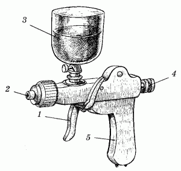
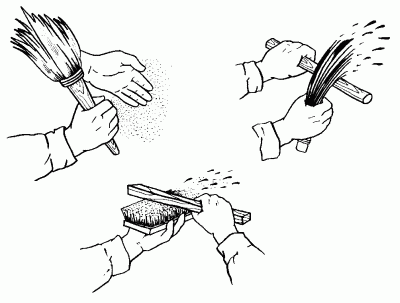

Отделка стен с помощью красок «Multicolor», «Multidecor» и набрызг.

«Multicolor» – алкидная краска, в составе которой присутствуют мельчайшие частицы различных оттенков. С помощью краскопульта высокого давления (не менее пяти атмосфер) эта краска наносится на заранее подготовленную поверхность стен. Стены, окрашенные с помощью краски «multicolor», выглядят достаточно необычно, привлекая внимание и поднимая настроение у всех живущих в квартире.
Итальянская краска «Multidecor» – специальная краска на основе акриловой смолы с чрезвычайно широким спектром оттенков. Эта краска позволяет получить уникальную отделку как по цвету, так и по стилю, которые более всего подходят к стилю самого помещения. При ее использовании можно создавать на окрашиваемых участках многочисленные зрительные эффекты с помощью поролоновой губки, шпателя, имитируя поверхность под дерево, а также обычной кистью.
Данная краска практически не имеет недостатков, однако цена ее достаточно высока и не всем доступна. В том случае, если хозяин квартиры стеснен в средствах, но желает выполнить очень качественную и красивую отделку стен своего жилища, можно предложить и другой способ проведения малярных работ. Все, что для этого нужно, – пылесос марки типа «Аудра» или «Ракета», пигменты различных цветов по индивидуальному выбору, распылитель куркового типа и водоэмульсионная краска, количество которой зависит от площади поверхностей окрашиваемых стен.
Последовательность действий такова. Прежде всего нужно подготовить стену: оштукатурить ее, загрунтовать и ошпаклевать. Затем, как только шпаклевка подсохнет, окрасить стену в нужный тон. Обычно используются светлые тона – светло-розовый, светло-голубой, бежевый или белый. Однако если вы решите пойти по другому пути и окрасить стену в темно-синий цвет, то пигменты для такого тона нужны светлые, например желтые, светло-зеленые и голубые. Такая стена будет выглядеть очень эффектно.
Следует обратить внимание на то, что для набрызга нужно использовать пигменты не менее трех оттенков.
Небольшое количество водоэмульсионной краски необходимо смешать с красителем и нанести его на стену с помощью распылителя (рис. 15). Дав стене подсохнуть, смешать краску с пигментом другого цвета и нанести ее на стену. Повторно краску нужно наносить только после того, как предыдущий слой подсохнет достаточно хорошо.

Рис. 15. Распылитель для нанесения набрызга на стену: 1 – курок; 2 – сопло; 3 – емкость для краски; 4 – регулятор поршня; 5 – трубка для подачи воздуха из пылесоса.
Набрызг можно проводить и с помощью обычной кисти (рис. 16). Приготовьте колер нужного оттенка (для этого понадобится краска двух или более пигментов). Затем следует взять кисть, расположить перед поверхностью стены палку на определенном расстоянии и ударить по ней ки-стью так, чтобы брызги от удара попали на стену.

Рис. 16. Набрызг на стену с помощью кисти.
В конце работы для закрепления краски (если она не влагостойкая) стены можно покрыть бесцветным лаком на водной основе.